物質の成り立ち
分解
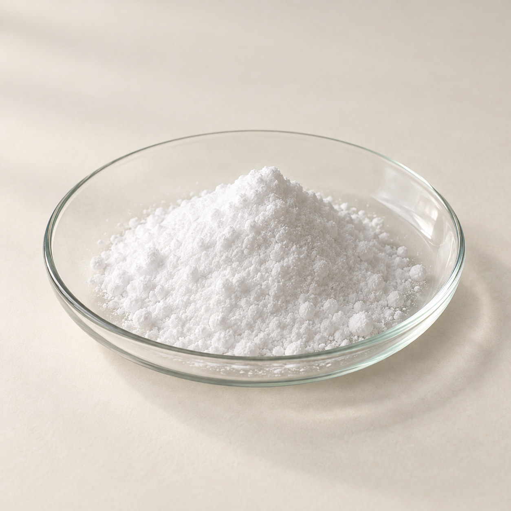
中2 理科 物質の成り立ちSeeD EDUCATION
炭酸水素ナトリウム
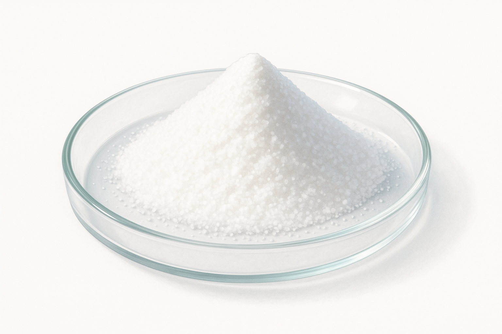
身近な名前重曹
食べ物ではふくらし粉の成分
暮らしでは掃除にも使う
中2 理科 物質の成り立ちSeeD EDUCATION
炭酸水素ナトリウムを加熱する
何が起こるか、見てみよう。
中2 理科 物質の成り立ちSeeD EDUCATION
器具の名前と役割
1
試験管
粉を加熱する・気体を集める
2
ゴム栓
試験管の口をふさぐ
3
ガラス管
発生した気体を送る
4
スタンド
試験管を固定する
5
ガスバーナー
試験管を加熱する
6
水そう
水を入れて気体を集める
中2 理科 物質の成り立ちSeeD EDUCATION
試験管の口は、少し下げる
できた液体が、熱い部分へ流れ戻るのを防ぐ。
試験管が割れないようにするため。
中2 理科 物質の成り立ちSeeD EDUCATION
加熱すると、こんな変化が
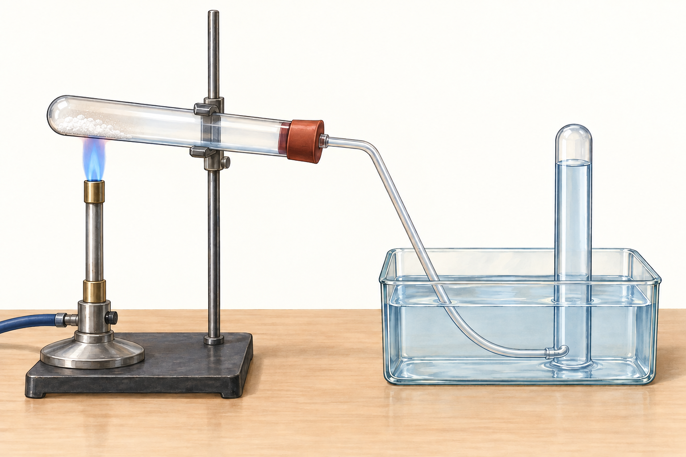
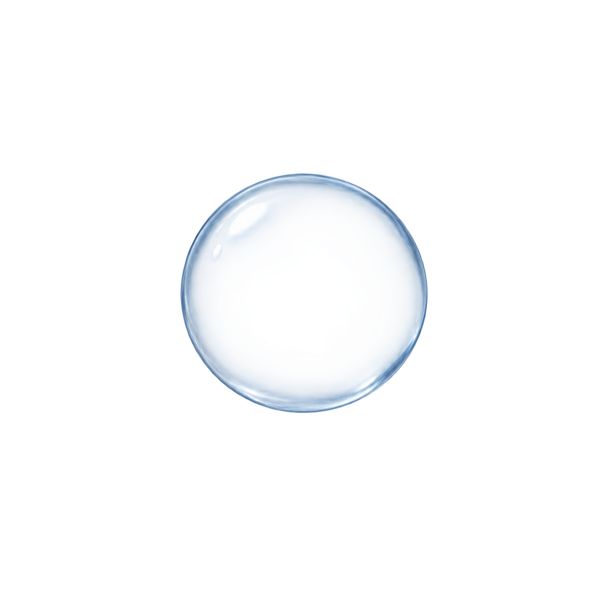
1 気体あわが出た
2 液体水滴がついた
3 固体白い粉が残った
それぞれ、何だろう？
中2 理科 物質の成り立ちSeeD EDUCATION
加熱を終えるとき
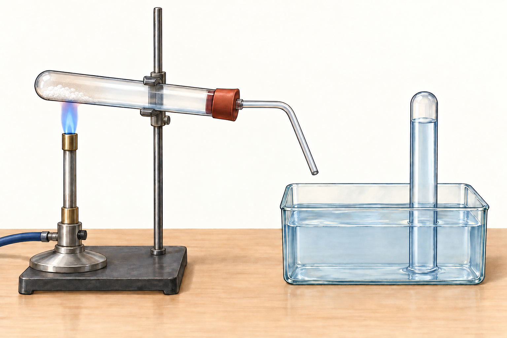
① 先にガラス管を水から抜く。
② そのあと加熱をやめる。
理由水が逆流するのを防ぐ。
中2 理科 物質の成り立ちSeeD EDUCATION
先に火を止めると、どうなる？
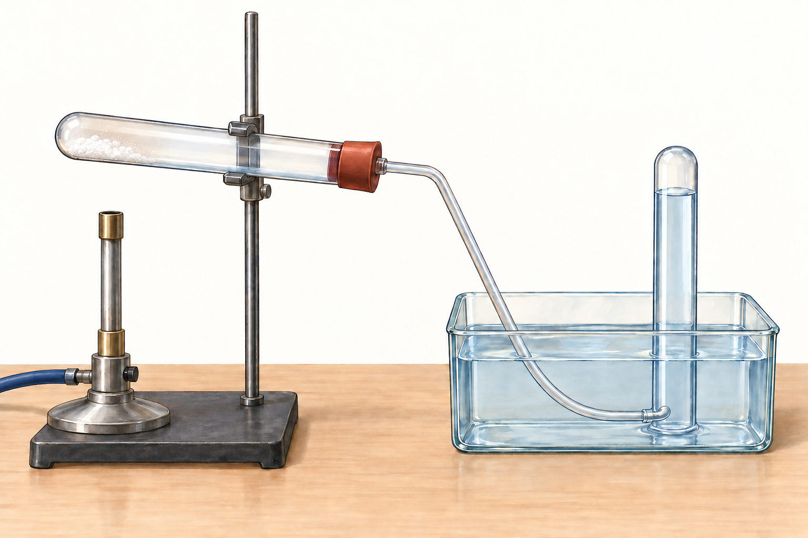
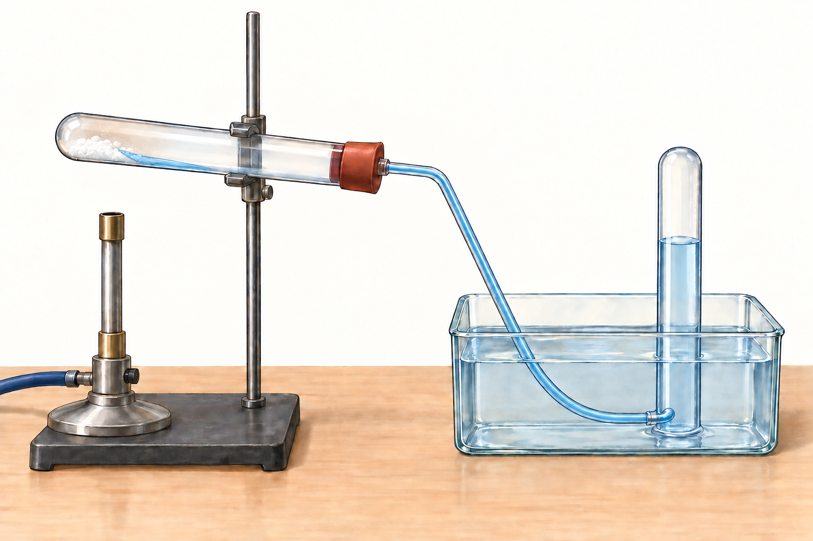
水につけたまま、先に火を止めた。
中が冷えて、内側の圧力が下がる。
水槽の水が、試験管へ逆流する。
熱い試験管が、割れるおそれがある。
逆流の道すじを青で強調した模式図。実際には行わない。
中2 理科 物質の成り立ちSeeD EDUCATION
この液体は、水？
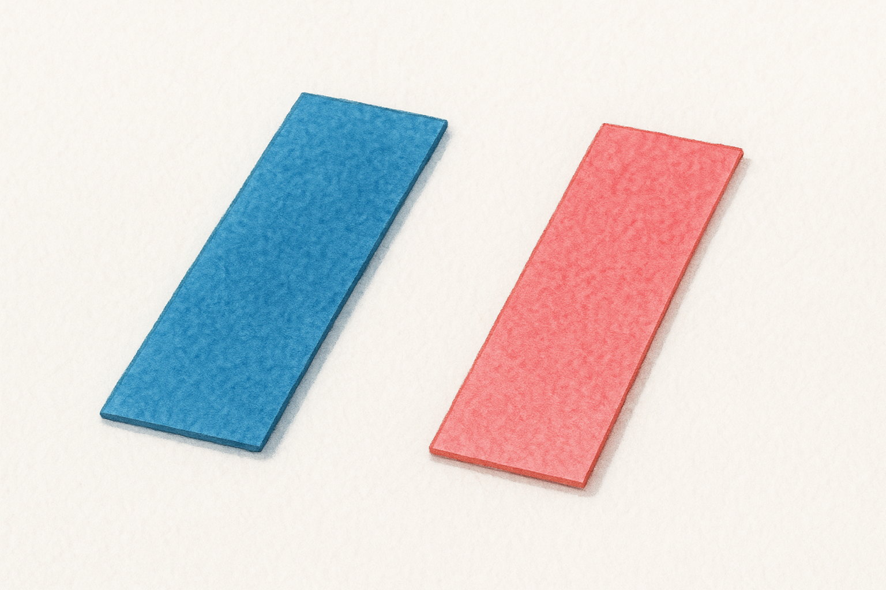
何を使って確かめる？
塩化コバルト紙
中2 理科 物質の成り立ちSeeD EDUCATION
液体をつけると、どうなる？
液体をつける
はじめつけたあとはじめ青色
液体をつけると赤色（桃色）
できた液体は、水。
中2 理科 物質の成り立ちSeeD EDUCATION
水の確かめ方
塩化コバルト紙が
青色から赤色に変わる。
中2 理科 物質の成り立ちSeeD EDUCATION
石灰水を入れて振る： 二酸化炭素の確かめ方
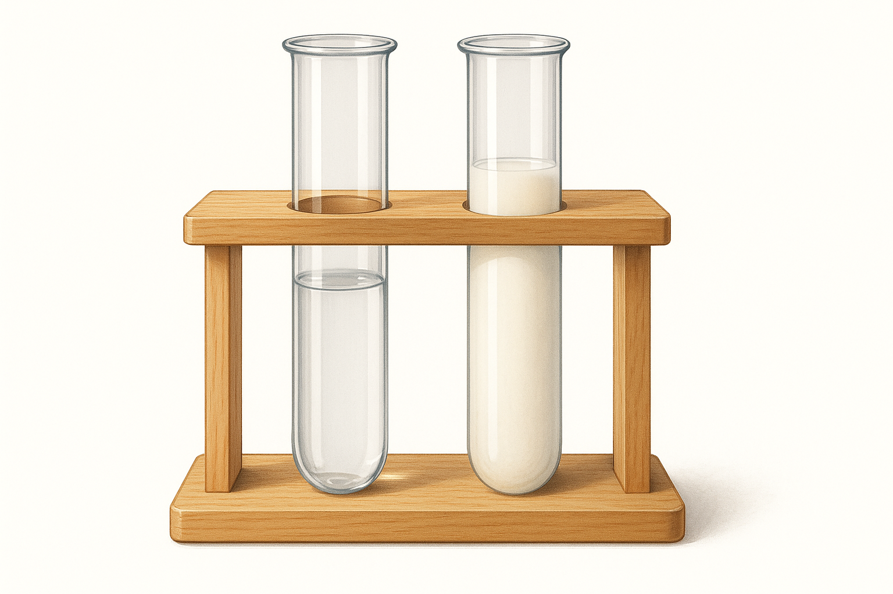
はじめ調べたあと石灰水を入れて、振る。
白く濁った
できた気体は二酸化炭素
中2 理科 物質の成り立ちSeeD EDUCATION
二酸化炭素の確かめ方
石灰水が白く濁る。
中2 理科 物質の成り立ちSeeD EDUCATION
白い粉のまま。変化なし？
加熱前白い粉
加熱後白い粉
見た目だけでは決められない。
中2 理科 物質の成り立ちSeeD EDUCATION
水への溶け方は？
加熱前溶けにくい
加熱後溶けやすい
中2 理科 物質の成り立ちSeeD EDUCATION
フェノールフタレイン液では？
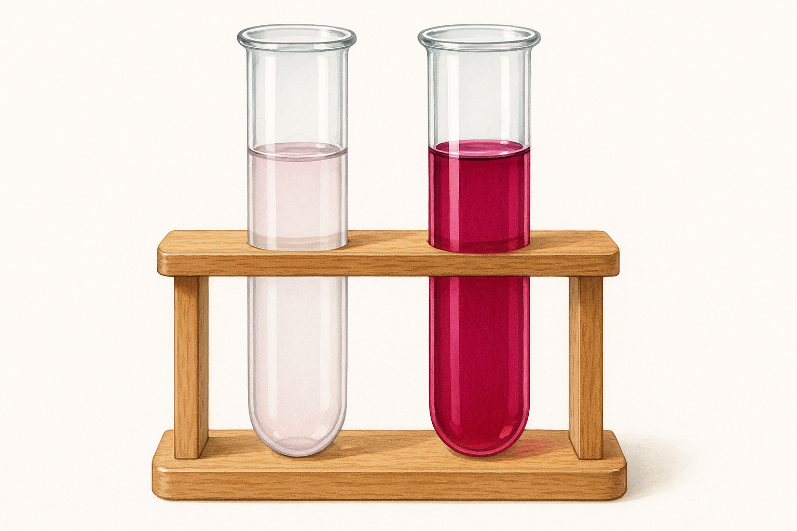
加熱前薄い赤色
加熱後濃い赤色
加熱前より
アルカリ性が強くなった
中2 理科 物質の成り立ちSeeD EDUCATION
炭酸ナトリウムの確かめ方
水に溶かして、
フェノールフタレイン溶液を加える。
赤色になる。
中2 理科 物質の成り立ちSeeD EDUCATION
炭酸水素ナトリウムを加熱
液体水
気体二酸化炭素
固体炭酸ナトリウム
中2 理科 物質の成り立ちSeeD EDUCATION
加熱前と同じ物質？
できたものは、もとの白い粉と違う。
別の物質に変わることを
化学変化という。
中2 理科 物質の成り立ちSeeD EDUCATION
化学変化
もとの物質
→別の物質
もとの物質とは違う物質が
できる変化。
中2 理科 物質の成り立ちSeeD EDUCATION
氷が水になるのも、化学変化？
氷
→水
いいえ。物質は水のまま。
これは状態変化です。
中2 理科 物質の成り立ちSeeD EDUCATION
結びつく変化・分かれる変化
結びつく
複数の物質から 別の物質ができる
分かれる
1種類の物質から 複数の物質ができる
中2 理科 物質の成り立ちSeeD EDUCATION
分解
1種類
→2種類以上
1種類の物質から、
2種類以上の別の物質ができる化学変化。
中2 理科 物質の成り立ちSeeD EDUCATION
熱分解
加熱
→分解
加熱によって起こる分解。
中2 理科 物質の成り立ちSeeD EDUCATION
今回の変化を、何と呼ぶ？
炭酸水素ナトリウムを加熱して分けた。
熱分解
中2 理科 物質の成り立ちSeeD EDUCATION
酸化銀を加熱すると、どうなる？
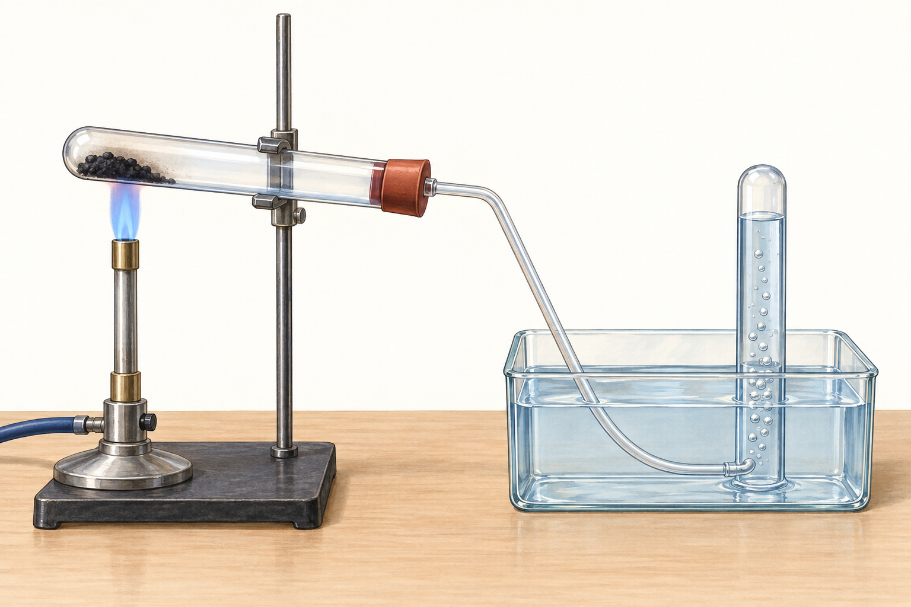
黒い粉の酸化銀を、加熱する。
発生した気体を、水上置換で集める。
この気体は何だろう？
中2 理科 物質の成り立ちSeeD EDUCATION
集めた気体を、確かめよう
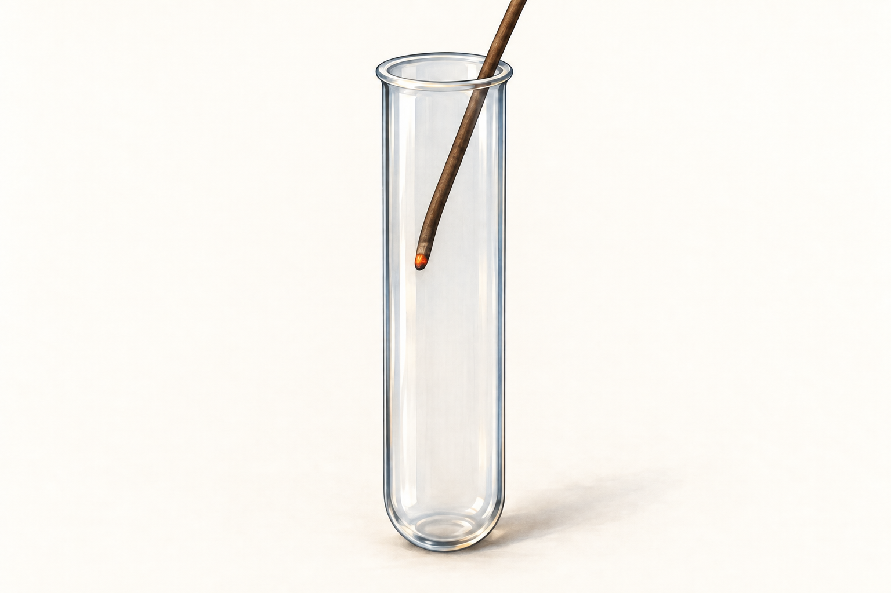
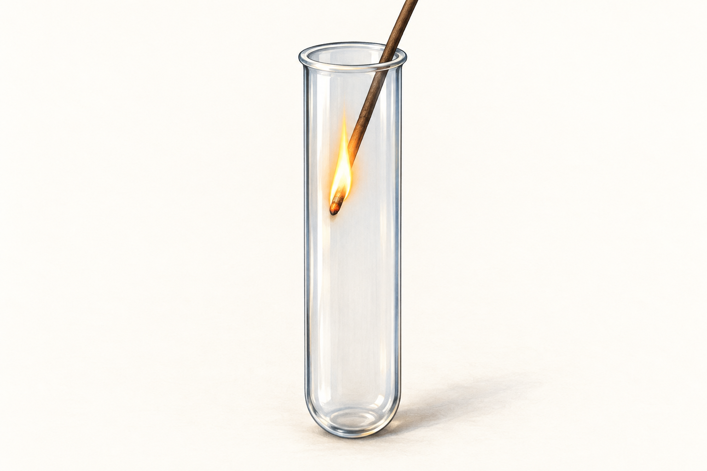
集めた気体に、火のついた線香を入れる。
線香が激しく燃えた。
中2 理科 物質の成り立ちSeeD EDUCATION
発生した気体は、酸素
線香が激しく燃えた。
発生した気体は、酸素。
中2 理科 物質の成り立ちSeeD EDUCATION
残った固体を、こすってみよう
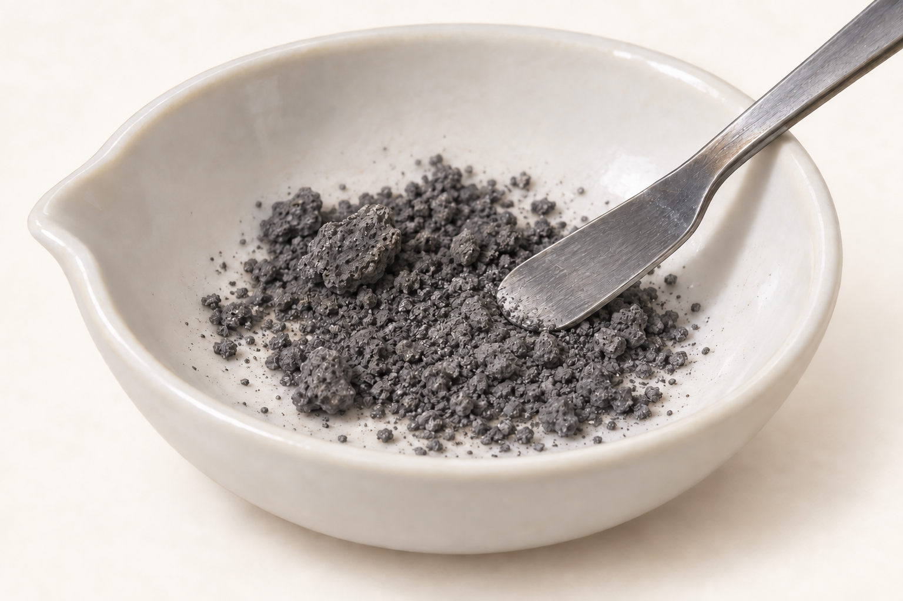
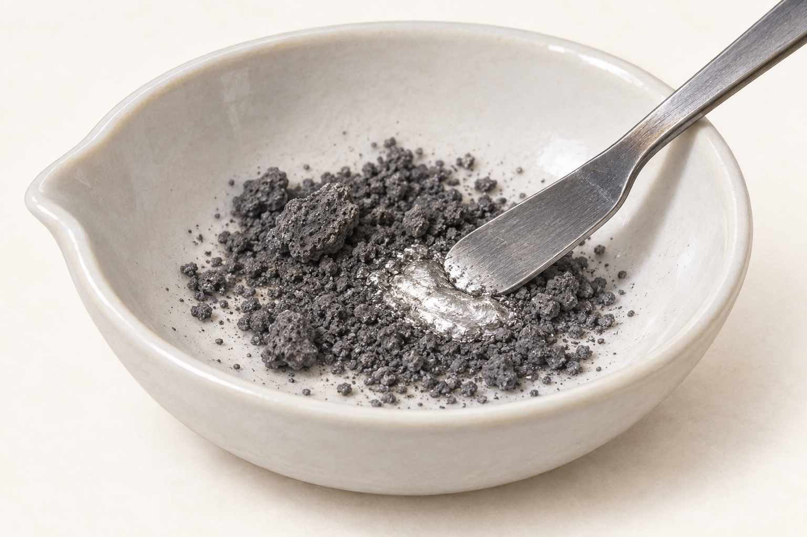
冷ました固体を、薬さじでこする。
こすった部分に、金属光沢が現れた。
中2 理科 物質の成り立ちSeeD EDUCATION
残った固体は、銀
こすると、金属光沢が現れた。
残った固体は、銀。
中2 理科 物質の成り立ちSeeD EDUCATION
酸化銀は、二つの物質に分かれた
酸化銀
→酸素 ＋ 銀
線香が激しく燃えた → 気体は酸素。
こすると金属光沢 → 残った固体は銀。
酸化銀は、酸素と銀に熱分解した。
中2 理科 物質の成り立ちSeeD EDUCATION
同じ熱分解でも、気体は違う
炭酸水素ナトリウム
二酸化炭素
酸化銀
酸素
中2 理科 物質の成り立ちSeeD EDUCATION
なぜ「熱分解」と言える？
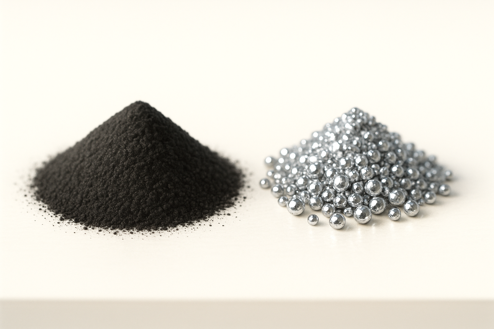
酸化銀を加熱して、銀と酸素ができた。
加熱で、1種類の物質から
2種類の別の物質ができたから。
中2 理科 物質の成り立ちSeeD EDUCATION
電気分解
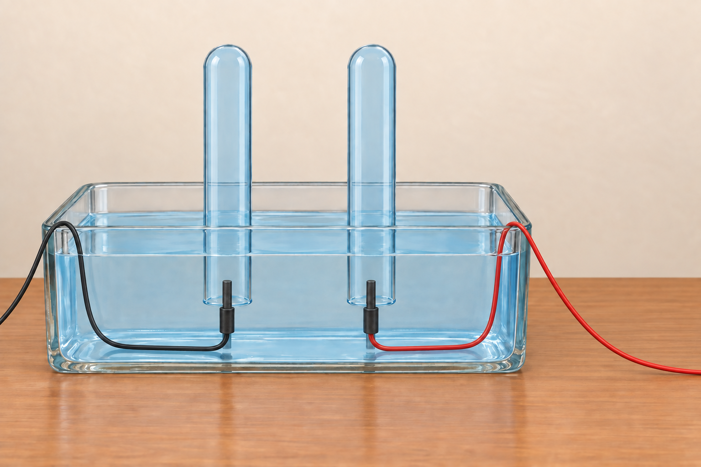
陰極（−）陽極（＋）電源の−へ電源の＋へ電源の−極につないだ電極が、陰極。
＋極につないだ電極が、陽極。
中2 理科 物質の成り立ちSeeD EDUCATION
水酸化ナトリウムを入れる理由は？
陰極（−）陽極（＋）電源の−へ電源の＋へ
純粋な水は、電流を通しにくい。
電流を通しやすくするために
水酸化ナトリウムを入れる
中2 理科 物質の成り立ちSeeD EDUCATION
両方の電極から、あわが出た
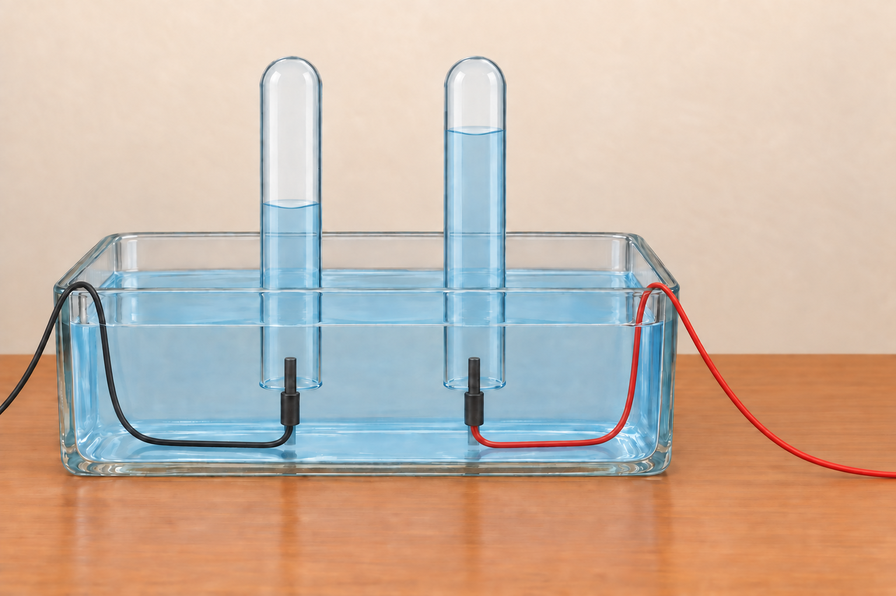
陰極（−）陽極（＋）電源の−へ電源の＋へ陰極にも、陽極にも気体がたまる。
それぞれ、何の気体だろう？
中2 理科 物質の成り立ちSeeD EDUCATION
陰極の気体に、火を近づけると？
音を立てて燃える。
陰極の気体は、水素。
中2 理科 物質の成り立ちSeeD EDUCATION
陽極の気体に、線香を入れると？
火のついた線香が、激しく燃える。
陽極の気体は、酸素。
中2 理科 物質の成り立ちSeeD EDUCATION
どちらの電極に、何ができた？
陰極（−）陽極（＋）電源の−へ電源の＋へ
陰極（−）に、水素。
陽極（＋）に、酸素。
中2 理科 物質の成り立ちSeeD EDUCATION
気体の体積を比べよう
水素（陰極）
酸素（陽極）
1区画は、同じ体積を表す。
水素：酸素 ＝ 2：1
中2 理科 物質の成り立ちSeeD EDUCATION
電気分解
水
→水素 ＋ 酸素
電流を流して、物質を分解すること。
中2 理科 物質の成り立ちSeeD EDUCATION
塩化銅水溶液にも、電流を流す
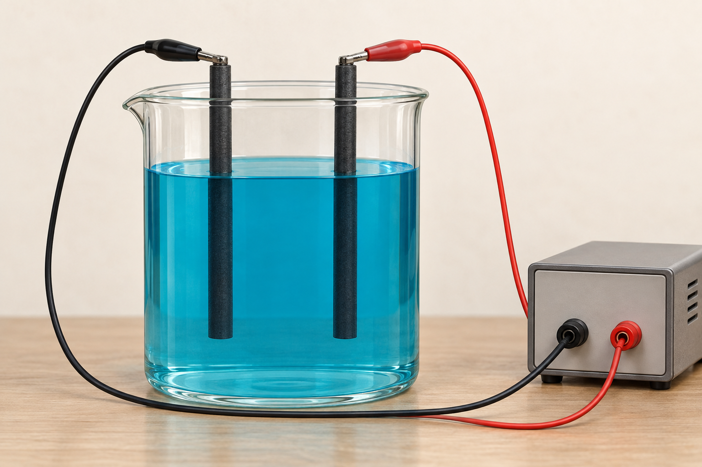
陰極（−）陽極（＋）塩化銅を水に溶かした、
青い水溶液。
2本の炭素棒を電極にする。
中2 理科 物質の成り立ちSeeD EDUCATION
電極のまわりは、どう変わる？
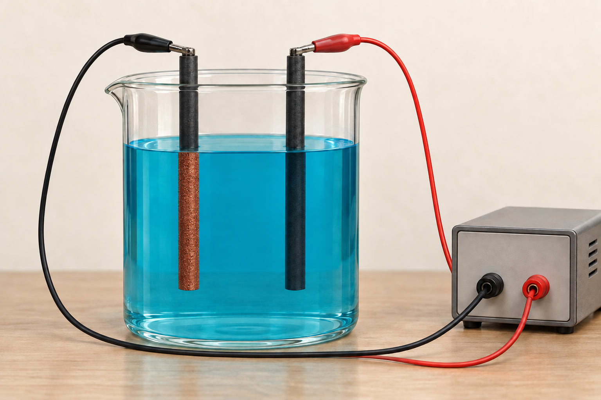
陰極（−）陽極（＋）陰極に、赤褐色の物質がついた。
陽極から、気体が出た。
中2 理科 物質の成り立ちSeeD EDUCATION
できた物質は、銅と塩素
陰極（−）陽極（＋）
陰極（−）に、銅。
陽極（＋）に、塩素。
中2 理科 物質の成り立ちSeeD EDUCATION
分解を起こす方法は2つ
加熱して分解する
熱分解
電流を流して分解する
電気分解
中2 理科 物質の成り立ちSeeD EDUCATION
分解で、何ができた？
方法もとの物質できた物質
熱分解炭酸水素ナトリウム→炭酸ナトリウム ＋ 水 ＋ 二酸化炭素
熱分解酸化銀→銀 ＋ 酸素
電気分解水→水素 ＋ 酸素
電気分解塩化銅→銅 ＋ 塩素
中2 理科 物質の成り立ちSeeD EDUCATION